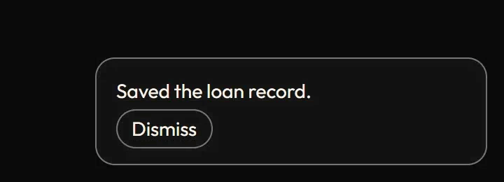
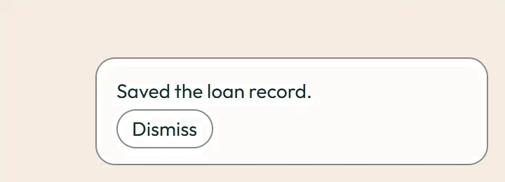

Toast
Add a toast; it leaves by itself after four seconds or with Dismiss. Under prefers-reduced-motion: reduce the motion is removed and the end state shows at once.
Current rule (v2.0.1, 2026-11-13): Success uses eight seconds of reading time; errors persist, and hover/focus pause expiry. Supersedes the line above; see current motion rules.
Undo simulates one second of service latency.
Current flow: success expires after eight seconds of reading time; hover and focus pause the clock. Errors remain until dismissed. Undo waits for completion; failures persist.
Image previews
Static posters are shown first. Play starts an animated image; Pause restores its poster. Reduced motion keeps posters visible.

